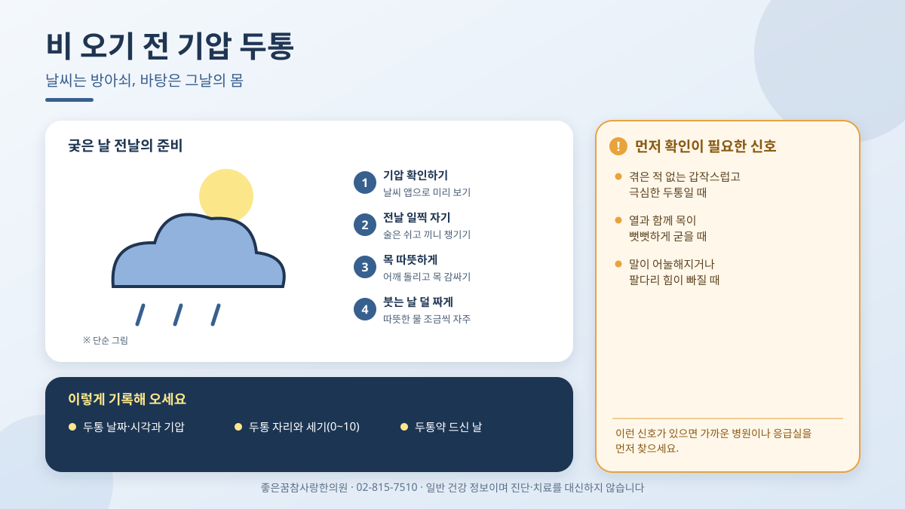

이종호 한의사 감수좋은꿈참사랑한의원 대표원장 (한의사 면허번호 19769)발행 2026-11-26 · 수정 2026-11-26
이 글의 차례
아침부터 하늘이 낮게 내려앉아 있습니다. 아직 비는 한 방울도 오지 않았는데 관자놀이가 지끈거리고 머리가 물 먹은 솜처럼 무겁습니다. "비 오려나 보다." 혼잣말을 하고 나면 정말로 오후에 비가 쏟아집니다. 가족들은 사람 일기예보라며 웃지만, 본인은 웃을 수가 없습니다.
날씨에 따라 머리가 아프다는 말씀을 진료실에서 자주 듣습니다. 장마철, 태풍이 올라올 때, 환절기에 저기압이 지나갈 때 특히 그렇습니다. 예전에는 기분 탓이라는 말을 듣기도 했지만, 날씨 변화와 두통 사이의 관련은 많은 분들이 겪는 일이고 연구에서도 꾸준히 다뤄지고 있습니다.
날씨는 내가 바꿀 수 없습니다. 그래서 기압 두통을 겪는 분들은 무력감을 많이 느끼십니다. 하지만 날씨를 바꿀 수는 없어도, 날씨가 바뀔 때 내 몸이 얼마나 크게 흔들리는지는 조금씩 달라질 수 있습니다. 이 글은 그 이야기를 하려고 합니다.
같은 날씨에도 어떤 날은 괜찮고 어떤 날은 몹시 아픈 것을 보면, 날씨 하나만이 아니라 그날의 잠과 피로, 목의 긴장, 식사가 함께 작용하고 있다는 것을 알 수 있습니다. 바로 그 부분이 우리가 손댈 수 있는 자리입니다.
기압 두통은 어떤 모양인가요
기압 두통은 날씨가 바뀌기 몇 시간에서 하루 전쯤부터 시작되는 경우가 많습니다. 기압이 떨어지는 흐림, 비, 태풍, 장마 때 더 잘 생기고, 사람에 따라서는 맑게 개면서 기압이 다시 오를 때 아프다는 분도 있습니다.
모양은 사람마다 다릅니다. 머리 전체가 무겁고 띵한 분, 관자놀이가 욱신거리는 분, 뒷목에서 뒤통수로 조여 오는 분, 눈 뒤가 묵직한 분이 있습니다. 두통과 함께 귀가 먹먹하거나, 몸이 붓고 나른하거나, 가벼운 어지럼과 메스꺼움을 느끼는 분도 많습니다.
비가 오기 시작하면 오히려 두통이 가라앉는다는 분도 계십니다. 날씨 자체보다 날씨가 바뀌는 그 흐름에 몸이 반응한다는 것을 보여 주는 대목입니다.
왜 날씨가 바뀌면 머리가 아플까요
기압 두통의 원리는 아직 하나로 정리되지 않았지만, 몇 가지 설명이 있습니다. 귀 안쪽에는 기압의 변화를 느끼는 감각이 있는데, 이 감각이 예민한 분은 기압이 떨어질 때 그 신호가 자율신경을 거쳐 두통으로 이어질 수 있다고 알려져 있습니다.
기압이 낮아지면 몸 안팎의 압력 차이가 생기면서 혈관과 조직이 미세하게 부풀고, 이것이 머리의 통증 신경을 자극한다는 설명도 있습니다. 습도가 높아지면 몸이 무겁고 붓는 느낌이 들고, 기온이 갑자기 바뀌면 목과 어깨가 움츠러들며 긴장하기 쉽습니다.
이런 변화 자체는 누구에게나 일어나지만, 모두가 두통을 겪지는 않습니다. 원래 편두통이 있는 분, 잠이 얕고 피로가 쌓인 분, 목과 어깨가 늘 굳어 있는 분, 귀의 감각이 예민한 분이 날씨 변화에 더 크게 흔들리는 경향이 있습니다.
편두통, 긴장성 두통과는 어떤 관계인가요
기압 두통은 따로 떨어진 병이라기보다, 원래 가지고 있던 두통이 날씨 변화를 계기로 터져 나오는 경우가 많습니다. 편두통이 있는 분은 날씨가 편두통을 부르는 방아쇠가 되고, 긴장성 두통이 있는 분은 날씨 때문에 목과 어깨가 더 굳으며 두통이 심해집니다.
한쪽 머리가 욱신거리고 빛과 소리가 싫어지며 메스꺼움이 함께 온다면 편두통의 모양에 가깝습니다. 머리 전체나 뒷목이 조이듯 무겁고 움직여도 크게 심해지지 않는다면 긴장성 두통의 모양에 가깝습니다. 둘이 섞여 있는 분도 많습니다.
이 구분이 중요한 이유는 살피는 방향이 달라지기 때문입니다. 편두통 모양이 뚜렷하고 자주 온다면 신경과 진료를 함께 받아 보시길 권합니다. 날씨는 바꿀 수 없어도, 날씨에 흔들리는 바탕을 다스리는 방법은 여러 가지가 있습니다.
계절마다 달라지는 두통
장마철에는 기압이 낮고 습도가 높은 날이 길게 이어집니다. 이 시기에는 두통과 함께 몸이 붓고 무겁고, 입맛이 떨어지고 속이 더부룩하다는 분이 많습니다. 몸이 습한 날씨에 지쳐 있는 모양입니다.
태풍이 올라올 때는 기압이 짧은 시간에 크게 떨어져 두통이 더 갑작스럽고 강하게 오기도 합니다. 환절기에는 기압과 기온이 하루가 다르게 바뀌어 두통이 들쑥날쑥해집니다. 겨울에는 찬바람에 목과 어깨가 움츠러들면서 뒷목 두통이 늘어납니다.
이렇게 계절마다 두통의 얼굴이 조금씩 다르기 때문에, 진료실에서는 지금이 어떤 계절인지, 지난해 같은 시기에는 어땠는지를 함께 여쭙습니다. 계절의 흐름을 알면 미리 준비할 수 있는 것이 생깁니다. 지난해의 기록이 있다면 함께 가져와 주세요.
날씨를 미리 알면 준비할 수 있습니다
기압 두통을 겪는 분들께 가장 먼저 권하는 것은 날씨와 두통을 함께 기록하는 일입니다. 요즘은 휴대폰 날씨 앱에서 기압을 쉽게 볼 수 있습니다. 두통이 온 날 기압이 어땠는지 몇 주만 적어 보면, 내 몸이 어느 정도의 변화에 반응하는지 보이기 시작합니다.
흐름이 보이면 날씨가 바뀌기 전날을 미리 준비할 수 있습니다. 그날은 평소보다 일찍 잠자리에 들고, 술은 쉬고, 끼니를 거르지 않고, 물을 충분히 마시고, 목과 어깨를 따뜻하게 해 주는 것입니다. 이것만으로도 두통의 세기가 달라진다는 분이 많습니다.
두통약을 드시는 분이라면 언제 드시는 것이 좋은지, 한 달에 며칠까지 드셔도 되는지를 처방한 선생님이나 약사와 상의해 두세요. 날씨가 궂은 달에 진통제를 너무 자주 드시면 오히려 두통이 잦아지는 경우가 있어 횟수를 함께 기록하시는 것이 좋습니다.
몸의 붓기와 무거움도 함께 봅니다
기압이 떨어지고 습도가 오르는 날, 두통과 함께 얼굴과 손발이 붓고 몸이 천근만근 무겁다고 말씀하시는 분이 많습니다. 반지가 잘 안 빠지고, 아침에 눈이 부어 있고, 다리가 무겁습니다. 이런 분들은 두통만큼이나 몸의 무거움이 괴롭다고 하십니다.
이런 날에는 짠 음식과 찬 음료를 줄이고, 따뜻한 물이나 차를 조금씩 자주 드시는 것이 좋습니다. 가볍게라도 몸을 움직여 땀을 살짝 내면 무거움이 한결 덜하게 느껴지는 분이 많습니다. 실내에서 계단 오르기나 제자리걷기도 괜찮습니다.
귀가 예민한 분들이 더 흔들리기도 합니다
기압 두통을 겪는 분들 가운데는 비행기를 탈 때 귀가 유난히 아프거나, 엘리베이터를 타면 귀가 먹먹해지거나, 높은 곳에 오르면 어지럽다는 분이 많습니다. 귀 안의 기압 감각이 예민한 분들입니다.
이런 분들은 날씨가 바뀌기 전에 귀가 먼저 먹먹해지고 그 뒤로 두통이 따라오는 순서를 겪기도 합니다. 귀가 먹먹할 때 침을 삼키거나 하품하듯 입을 크게 벌렸다 닫으면 귀 안팎의 압력이 맞춰지며 한결 편해질 수 있습니다.
귀울림이나 청력 변화가 함께 있거나 어지럼이 몇 시간씩 이어진다면 이비인후과 진찰도 함께 받아 보시길 권합니다. 귀의 상태를 확인하는 것이 두통을 이해하는 데에도 도움이 됩니다.
두통이 시작된 날 집에서 해 볼 것
두통이 시작되면 먼저 하던 일을 잠시 멈추고 조용하고 어두운 곳에서 10~20분 쉬어 보세요. 눈을 감고 숨을 길게 내쉬며 어깨의 힘을 빼는 것만으로도 두통의 기세가 조금 누그러지는 분이 있습니다.
뒷목과 어깨가 굳어 있다면 따뜻한 수건을 목덜미에 올려 두고, 관자놀이가 욱신거린다면 시원한 수건을 이마에 대 보세요. 어느 쪽이 편한지는 사람마다 다르니 두 가지를 다 해 보고 맞는 쪽을 고르시면 됩니다.
배가 고프거나 물을 오래 마시지 않았다면 가볍게 먹고 마시는 것도 도움이 됩니다. 반대로 진한 커피를 연거푸 마시거나 술로 두통을 잊으려 하면 다음 날 두통이 더 길게 이어질 수 있습니다.
날씨 두통을 키우는 생활 습관
같은 날씨에도 두통이 심한 날과 덜한 날이 있습니다. 진료실에서 두 날을 비교해 보면 심했던 날 앞에는 잠이 부족했거나, 끼니를 걸렀거나, 오래 화면을 보았거나, 긴장이 많았던 경우가 많습니다.
날씨는 방아쇠이고, 그 방아쇠가 얼마나 크게 울리는지는 몸의 바탕이 정한다고 생각하시면 쉽습니다. 바탕이 지쳐 있으면 작은 기압 변화에도 크게 울리고, 바탕이 여유로우면 같은 변화에도 덜 흔들립니다.
그래서 기압 두통을 다룰 때는 비 오는 날만이 아니라 맑은 날의 생활도 함께 봅니다. 평소 잠과 식사, 목의 긴장을 고르게 해 두는 것이 궂은 날을 덜 힘들게 보내는 준비가 됩니다.
생리 주기와 날씨가 겹칠 때
여성분들 가운데는 생리 전후에 두통이 잦은데, 그 시기에 비까지 겹치면 유난히 심하게 아프다는 분이 많습니다. 몸이 예민해지는 시기에 날씨라는 방아쇠가 더해지기 때문입니다.
이런 분은 두통 기록에 생리 주기를 함께 적어 두시면 흐름이 훨씬 잘 보입니다. 생리 예정일과 흐린 날 예보가 겹치는 주에는 일정을 조금 여유 있게 잡고, 잠과 식사를 평소보다 더 챙겨 보세요.
생리통이나 생리 불순이 함께 있다면 산부인과 진료도 함께 받아 보시길 권합니다. 두통과 생리의 흐름을 같이 보면 살필 자리가 더 분명해집니다.
먼저 이렇게 여쭙니다
- 두통은 날씨가 바뀌기 얼마 전부터, 어느 자리에서 시작되나요?
- 어떤 날씨에 가장 심한가요? 비, 태풍, 장마, 환절기 가운데 어떤가요?
- 원래 편두통이나 긴장성 두통이 있으셨나요?
- 두통약은 한 달에 며칠 정도 드시나요?
- 귀 먹먹함, 붓기, 어지럼, 메스꺼움이 함께 오나요?
- 잠과 피로, 목과 어깨의 긴장은 어떠신가요?
일상에서 먼저 해 볼 수 있는 것
- 날씨 앱으로 기압을 확인하고 두통과 함께 기록하기
- 흐린 날이 예보되면 전날 일찍 자고 술은 쉬기
- 끼니를 거르지 않고 물을 하루 동안 나눠 자주 마시기
- 목과 어깨를 따뜻하게 하고 가볍게 돌려 풀어 주기
- 습한 날 짠 음식과 찬 음료 줄이기
- 실내에서라도 가볍게 몸을 움직여 땀을 살짝 내기
- 귀가 먹먹할 때는 하품하듯 입을 크게 벌렸다 닫아 보기
날씨가 궂은 날에는 중요한 일정이나 무리한 일을 조금 덜어 두는 것도 방법입니다. 내 몸이 날씨에 예민하다는 것을 인정하고 그날을 조금 너그럽게 보내는 것만으로도 두통에 대한 부담이 줄어든다는 분이 많습니다.
한의원에서 함께 살필 수 있는 경우
- 비 오기 전이나 환절기마다 두통이 반복되는 경우
- 두통과 함께 몸이 붓고 무겁고 소화가 더딘 경우
- 목과 어깨가 늘 굳어 있고 날씨가 바뀌면 뒷목이 더 당기는 경우
- 날씨 탓에 두통약을 자주 드시게 되는 경우
- 두통 때문에 잠이 얕아지고 피로가 쌓인 경우
좋은꿈참사랑한의원에서는 먼저 두통의 모양과 함께 오는 불편을 자세히 여쭙고, 맥을 짚어 몸 전체의 상태를 살핍니다. 목과 어깨는 직접 만져 보며 굳은 자리를 확인합니다.
진찰한 내용을 바탕으로 침, 온열 관리, 한약 상담 가운데 지금 상태에 맞는 것을 정합니다. 한약을 상의할 때는 드시는 약을 모두 확인하고 신중하게 정합니다. 신경과에서 두통약을 처방받아 드신다면 처방한 선생님과 상의 없이 멈추지 않으셔야 합니다. 임신 중이시라면 먼저 알려 주시고 산부인과와도 상의해 주세요.
이렇게 기록해 오시면 상담이 쉬워집니다
- 두통이 온 날짜와 시각, 그날의 날씨와 기압
- 두통의 자리, 모양, 세기(0~10)
- 함께 온 불편(붓기, 귀 먹먹함, 메스꺼움, 어지럼)
- 전날 잠든 시각과 깬 시각
- 두통약을 드신 날과 횟수
- 생리 주기(해당하시는 분)
기록이 한두 달 쌓이면 날씨와 두통, 그리고 잠과 피로가 어떻게 겹치는지가 보입니다. 날씨가 같아도 덜 아팠던 날이 있었다면, 그날 무엇이 달랐는지가 가장 귀한 실마리입니다. 기록은 종이 수첩이든 휴대폰 메모든 편한 방법이면 됩니다. 중요한 것은 완벽하게 적는 것이 아니라 꾸준히 이어 가는 것입니다.
이런 증상은 먼저 확인이 필요합니다
- 지금까지 겪은 적 없는 갑작스럽고 극심한 두통이 오는 경우
- 두통과 함께 열이 나고 목이 뻣뻣하게 굳거나 말이 어눌해지고 팔다리에 힘이 빠지는 경우
이런 신호가 있으면 한의원보다 가까운 병원이나 응급실을 먼저 찾으세요.
함께 읽으면 좋은 글
- 날씨가 바뀔 때마다 머리가 무겁고 아픈 것은 왜일까요?
- 한쪽 머리가 욱신거리는 편두통은 생활에서 무엇을 기록하나요?
- 스트레스를 받으면 뒷목이 당기고 머리가 아픈 긴장성 두통은 어떻게 살피나요?
- 두통약을 자주 먹을수록 두통이 더 잦아지는 약물과용 두통은 어떻게 살피나요?

여쭙는 것
- 두통은 날씨가 바뀌기 얼마 전부터, 어느 자리에서 시작되나요?
- 어떤 날씨에 가장 심한가요? 비, 태풍, 장마, 환절기 가운데 어떤가요?
- 원래 편두통이나 긴장성 두통이 있으셨나요?
생활에서 해 볼 것
- 날씨 앱으로 기압을 확인하고 두통과 함께 기록하기
- 흐린 날이 예보되면 전날 일찍 자고 술은 쉬기
- 끼니를 거르지 않고 물을 하루 동안 나눠 자주 마시기
한의원에서 함께 살필 것
- 비 오기 전이나 환절기마다 두통이 반복되는 경우
- 두통과 함께 몸이 붓고 무겁고 소화가 더딘 경우
- 목과 어깨가 늘 굳어 있고 날씨가 바뀌면 뒷목이 더 당기는 경우
먼저 확인이 필요한 신호
- 지금까지 겪은 적 없는 갑작스럽고 극심한 두통이 오는 경우
- 두통과 함께 열이 나고 목이 뻣뻣하게 굳거나 말이 어눌해지고 팔다리에 힘이 빠지는 경우
한눈에 보는 표
| 구분 | 핵심 |
|---|---|
| 여쭙는 것 | 두통은 날씨가 바뀌기 얼마 전부터, 어느 자리에서 시작되나요? 어떤 날씨에 가장 심한가요? 비, 태풍, 장마, 환절기 가운데 어떤가요? |
| 생활에서 해 볼 것 | 날씨 앱으로 기압을 확인하고 두통과 함께 기록하기 흐린 날이 예보되면 전날 일찍 자고 술은 쉬기 |
| 한의원에서 함께 살필 것 | 비 오기 전이나 환절기마다 두통이 반복되는 경우 두통과 함께 몸이 붓고 무겁고 소화가 더딘 경우 |
| 먼저 확인이 필요한 신호 | 지금까지 겪은 적 없는 갑작스럽고 극심한 두통이 오는 경우 두통과 함께 열이 나고 목이 뻣뻣하게 굳거나 말이 어눌해지고 팔다리에 힘이 빠지는 경우 |
자주 묻는 질문
날씨 때문에 머리가 아프다는 게 정말 있는 일인가요?
날씨 변화와 두통의 관련은 많은 분들이 겪고 연구에서도 다뤄지는 주제입니다. 기분 탓으로 넘기기보다 기록을 통해 내 몸의 흐름을 확인해 보시길 권합니다.
비 오기 전에 미리 두통약을 먹어도 되나요?
미리 드시는 것이 맞는지는 두통의 모양과 드시는 약에 따라 다릅니다. 처방한 선생님이나 약사와 상의해 정하시고, 한 달에 드신 날을 기록해 두세요.
날씨를 바꿀 수 없는데 무엇을 할 수 있나요?
날씨는 바꿀 수 없어도 그날의 잠, 식사, 목의 긴장, 붓기처럼 두통을 키우는 요인은 조절해 볼 수 있습니다. 기록으로 흐름을 찾는 것이 첫걸음입니다.
장마철에 두통과 함께 몸이 붓고 무거운데 같이 살펴볼 수 있나요?
네, 두통과 붓기, 소화, 잠을 함께 여쭙고 맥을 짚어 몸 전체의 흐름을 살핍니다. 진찰 뒤에 지금 상태에 맞는 방법을 정합니다.
좋은꿈참사랑한의원은 재진 때 지난번 이야기부터 이어서 여쭙니다. 진료시간과 예약은 오시는 길에서 확인하세요.
어디서 상담받을 수 있나요?
좋은꿈참사랑한의원은 서울 동작구 만양로2길 2 신성빌딩 3층·5층(서울 동작구 상도동, 7호선 상도역 3번 출구 근처)에 있습니다. 한의사 3명(이종호 대표원장, 조영기 수석진료원장, 정원영 진료원장)이 진료합니다. 진료시간은 평일 09:30~20:00(점심 13:00~14:00), 토·일·공휴일 09:30~15:00이며, 방문 전 전화로 확인을 권합니다. 예약은 네이버 예약, 카카오톡 상담, 전화 02-815-7510로 받습니다.
이 글은 일반적인 건강 정보이며 개인의 진단이나 치료를 대신하지 않습니다. 증상이 있거나 복용 중인 약이 있다면 진료를 통해 확인하세요. 치료 효과는 개인마다 다를 수 있습니다.
작성 기준: 일반적으로 알려져 있는 건강 정보를 참고해 정리했습니다(대표원장 감수). 증상 기록은 1~2주 동안 하루 1회, 비슷한 시간에 적어 오시면 지난 상태와 비교하기 쉽습니다.